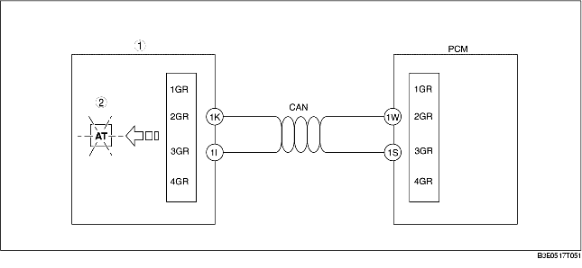

• The AT warning light is built into the instrument cluster.
• The AT warning light illuminates when the instrument cluster receives a warning signal from the PCM via CAN communication.
• The PCM sends a warning signal to the instrument cluster via CAN communication when it detects a malfunction.

.